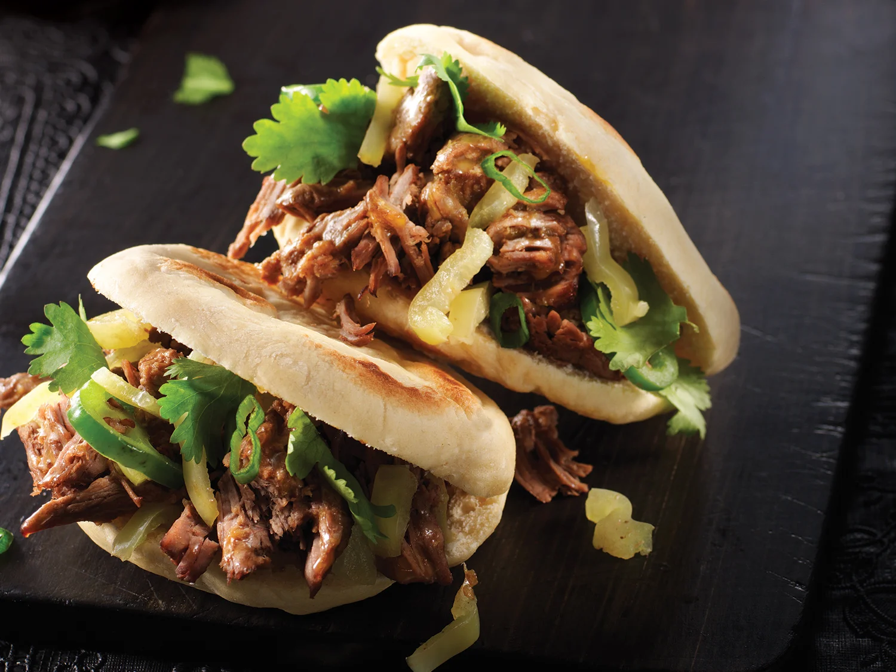

Rou Jia Mo
Credit:
Rou Jia Mo Recipe
Return to main page

Description:
Rou Jia Mo is a sweet food originating from Xi'an, Shaanxi province. It features shredded braised
pork or beef in a bun Mo bread. Rou Jia Mo (bread with braised meat) originated from Shaanxi province, also known as Chinese style hamburger.
It is a perfect street food with a savory filling and chewy bread (mo).
Rou means pork, Jia means placing the meat between the bread
and mo means bread. The direct translation for Rou Jia Mo (肉夹馍) is “meat in a bun,” which sort of makes
it similar to what we would think of as a hamburger, or maybe a Chinese sloppy joe.
Ingredients:
- 2 pounds pork belly
- 3 cups water
- 1/4 cup Shaoxing wine
- 12 grams rock sugar (or 1 tablespoon granulated sugar)
- 2 tablespoons light soy sauce
- 1 tablespoon dark soy sauce
- 4 scallions (cut in half)
- 3 slices ginger
- 2 star anise
- 1 cinnamon stick
- 1 black cardamom pod
- 2 pieces galangal (or sand ginger)
- 1 teaspoon Sichuan peppercorns
- 3 bay leaves
- Salt (to taste)
- 1 cup chopped cilantro
- 3½ cups all-purpose flour, 2 teaspoons active dry yeast, and 1 to 1¼ cups warm water for the buns
Steps:
- Keep the pork belly whole, or cut it into large, 4- to 5-inch chunks. Place the pork belly in a medium pot, and fill it with just enough water to cover it. Bring the water to a boil. Once the pork has gone opaque and appears cooked on the outside, shut off the heat, remove the pork from the pot, and rinse it clean under running water. Dump out the water and clean the pot.
- Put the pork belly back in the clean pot, and add 3 cups of water, the Shaoxing wine, rock sugar, light soy sauce, dark soy sauce, scallions, ginger, star anise, cinnamon, black cardamom, galangal, Sichuan peppercorns, and bay leaves. Bring everything to a boil, then immediately turn down the heat to low and simmer for 90 minutes to 2 hours, until fork tender. To test it, stick a fork into the meat. Its done if you can pull the fork out easily. Do not use high heat when simmering to avoid drying out the sauce. Add salt to taste.
- While the pork is simmering, make the buns. To a mixing bowl, add the flour, yeast, and salt. Slowly add the warm water, mixing and kneading until it forms a smooth dough ball. Once a dough ball is formed, knead it for another 10 minutes to build up the gluten in the dough--this will make the buns chewier. You can also use an electric mixer with the dough hook attachment for this. The dough should feel soft and easy to work with. Cover the dough, and let it proof at room temperature for about an hour until it doubles in size.
- After proofing, knead the dough for about 5 minutes to get rid of any air bubbles. Divide the dough into 12 equal pieces. Cover the dough balls with a kitchen towel to prevent them from drying out while youre shaping the buns.
- To shape the buns, take each dough ball and roll it out into a cigar-like shape. Next, roll it out into a longer and narrower strip, and fold it in half lengthwise. Roll it up into a bundle, with the loose end tucked underneath. Turn it on its side so the swirls are facing up, and press it down with your palm. Now roll it out into a disc about 4 inches in diameter. Repeat these steps for all of the dough balls. Cover the shaped buns with a dry kitchen towel, and let rest for 20 minutes before cooking.
- Pre-heat a flat-bottomed pan or cast-iron skillet over medium heat. Place the buns in the pan about an inch apart (no oil is necessary). Cover the lid, and let the buns cook for 2 minutes on each side. The heat shouldnt be too high, or your buns may burn. After cooking the buns for 2 minutes on each side, remove the lid, and cook each side for another minute or so until the entire bun is golden brown.
- To serve, take out the pork, coarsely chop it, and transfer it to a bowl. Mix in the chopped cilantro, and add the sauce from the meat to your desired consistency. Think Asian sloppy joe--you could go really saucy or have a drier sandwich. Toss everything together, slice open a bun, load the meat inside, and serve.